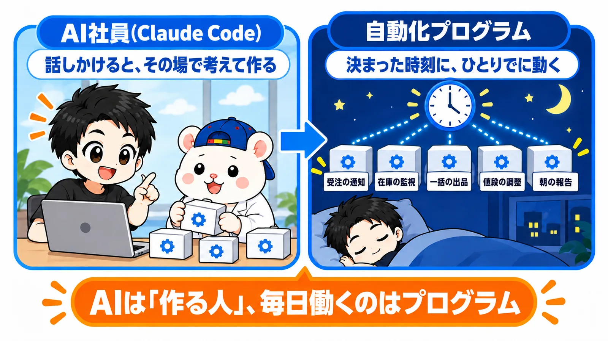
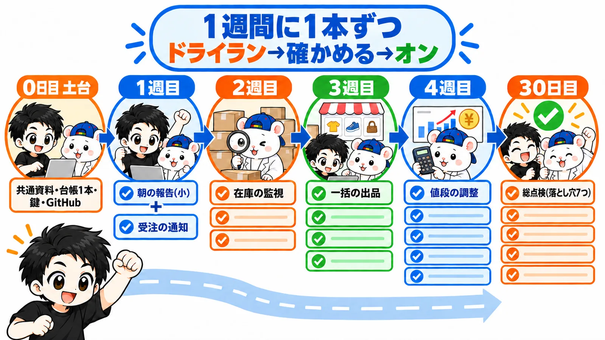
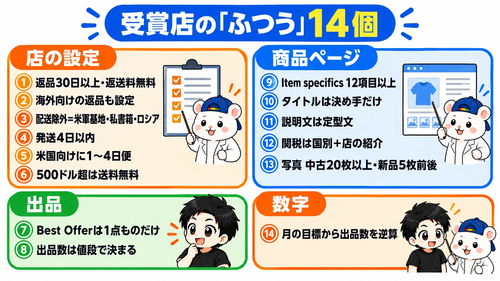

8月26日に出したeBay輸出の教科書を、第2版にしました。
ここまで25人の方に読んでもらいました。
いただいた質問と、うちの店で9月に作った仕組みを、ぜんぶ書き足しています。
- 章: 13章 → 24章(+卒業章)
- 特典: 7点 → 12点
- すでに買った人: 追加料金なし。開き直すだけで第2版が読めます
第1版の弱点: 毎日、AIに頼んでいた
第1版は「AI社員に仕事を頼む」やり方でした。
リサーチも出品も値付けも、AIに話しかけて、その場でやってもらう。
これで初月から利益は出ました。
でも、続けると困ることが出てきます。
- 毎日、同じ指示を出す
- 出品が増えると、AIの利用上限に届く
- ぼくが話しかけないと、店が止まる
なので、9月はやり方を変えました。
AIは「作る人」。毎日働くのは、AIが作ったプログラム。

プログラムなら、決まった時刻にひとりでに動きます。
AIの利用上限も減りません。
出品が1日100件でも200件でも、同じように回ります。
第2版は、この「プログラムを作るところ」まで書きました。
足した中身
① 第6部 自動化プログラムで、店を毎日ひとりでに回す(第19〜24章)
うちの店で毎日動いている5本の作り方です。
- 受注の通知: 売れたら、仕入元のリンクつきでスマホに届く
- 在庫の監視: 仕入元で売り切れたら、eBayを在庫ゼロにする
- 一括の出品: 候補リストを、毎日まとめて出品する
- 値段の調整: 競合と原価に合わせて値段を直す。下限(フロア)は割らない
- 朝の報告: 店の数字と、プログラムが動いた記録を毎朝1枚で
台帳を1本にする理由、動かす時刻表、うちで実際に踏んだ落とし穴7つ(台帳の85行が消えた事故など)も書いています。
最後は、1週間に1本ずつ増やす30日のロードマップです。

② 第5部 APIの教科書(第15〜18章)
仕事ごとに、eBay APIのどの窓口を使うか。
つなぐまでの5ステップ、回数の上限と申請、APIが届かない所の扱い。
メルカリ・ラクマ・Yahoo!フリマ・ヤフオク・Amazon・楽天の6つから、実際に1品ずつ出品した試走の結果も入れました。
③ 第14章 受賞セラーの「ふつう」に、店をそろえる
受賞店20店を7回調べて、どの店もやっていた14個をまとめました。
それで自分の店を点検して、直した前と後も載せています。

④ 第8章 顧客対応の完全自動化
判断の要らない返信は、AIがそのまま送ります。
うちの店の9月9日〜30日は、自動で送ったのが197件、人が確認したのが42件。
約75%が自動でした。
⑤ 特典に、自動化キット5本
上の5本を、あなたのAIに作らせるための発注書キットです。
要件定義書・段階ごとのコピペ発注文・検収チェックリストの3点セット。
5本に共通の設計書と、APIの最小契約表(どの窓口に何を送るかの一覧)も付けました。
⑥ 手数料・関税(DDP)などを、最新の公式情報に
第1版を出してから変わったルールを、公式のページで確かめて直しました。
本当に、この教科書だけで作れるか
ここは試しました。
教科書と特典だけを別のAI(Claude CodeとCodex)に渡して、練習用のeBayサーバーの上で5本を作らせました。
読者の役は「eBayを始めて2か月、プログラミングはできない会社員」です。
1回目は、抜けだらけでした。
AIが推測で補った所を、1つずつ教科書と特典に書き足しました。
3回目で、AIが作る部分は最後まで通りました。
GitHubやDiscordの登録など、人がやる作業は、いま初めての人に試してもらっています。
迷った所は、また書き足します。
30日後に、人に残る仕事
正直に書きます。
ぜんぶ自動になるわけではありません。
30日後に人に残るのは、この3つです。
- 仕入れのボタンを押す
- 毎朝の在庫チェックの報告(売り切れで止めた品・値上がりした品)を読む
- プログラムが「これは人が決めて」と上げてきた例外を承認する
あとは梱包と発送です。
値段の下限や利益の率は、うちの店のルールです。
教科書では「うちは◯◯」と書いてあるので、あなたの店の数字に変えて使ってください。
まとめ
第2版で変わったのは、この1行です。
AIに毎日頼む店 → AIが作ったプログラムが、毎日ひとりでに回す店。
すでに買った人は、追加料金なしで読めます。
特典のzipも新しい版になっているので、ダウンロードし直してください。
あなたが寝ている間に、いちばん動いてほしい仕事はどれですか?🐹
▼中の人🏠(レンタルスペース23部屋・売上1.5億)のレンスペ実録

▼ブログ(eBay×レンスペ、全記事まとめ)

▼この店のやり方は、ぜんぶ1冊にまとめてあります
リサーチ・出品・値付け・顧客対応まで、初月利益10万4,286円を出した実店舗の記録と手順を全部書いた教科書です。
読んだその日から、AI社員の作り方をそのまま真似できます。
『AI × eBay輸出の教科書 — 梱包以外、ぜんぶAI』

内容・最新価格は販売ページをご確認ください。